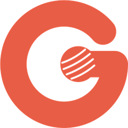

GomitoloServe una mano?
Hai un dubbio, un problema o un suggerimento su Gomitolo? Scrivici: ti rispondiamo appena possibile.
fcaimidev@gmail.comSi apre la tua app di posta con l'oggetto già compilato. Se non ne hai una, copia l'indirizzo e scrivici da dove preferisci. Per aiutarci a capire, indica la versione dell'app (in Impostazioni) e il modello del telefono.
Domande frequenti
Serve internet per giocare?
No. Tutti i puzzle sono già nell'app e il gioco funziona anche offline. La connessione serve solo per i video facoltativi che regalano monete e per gli annunci.
Ho cambiato telefono o reinstallato l'app: ritrovo i miei progressi?
Gomitolo non ha account e non salva i progressi online: livelli, monete e impostazioni restano sul tuo telefono. Se il sistema del telefono non li ripristina da solo, cambiando telefono o disinstallando l'app si perdono. Per ricominciare da capo di proposito vai in Impostazioni → Azzera progresso.
Come cambio il consenso agli annunci e alle statistiche?
Da Impostazioni → Privacy e consenso puoi rivedere le tue scelte in qualsiasi momento. I dettagli sono nell'informativa sulla privacy.
Come funzionano suggerimenti e monete?
Le monete si guadagnano giocando (completando livelli, trovando parole extra, con il puzzle giornaliero) e con i video facoltativi: non esistono acquisti in app. Il primo suggerimento di un livello è gratuito, gli altri si pagano con le monete.
Perché il Time attack è bloccato?
Si sblocca dopo aver completato alcuni livelli della campagna: nella schermata iniziale vedi quale livello serve.
Una parola valida non viene accettata. Perché?
Il gioco riconosce un elenco di parole italiane comuni (sostantivi e verbi, con le loro forme più usate). Alcune parole valide non ci sono, e le parole accentate o troncate non contano né come bonus né come errore. Se pensi che ne manchi una, scrivici quale.